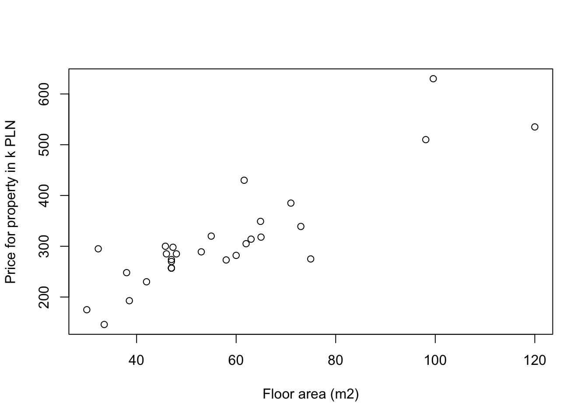

Chapter 4 Internet data sources
4.1 Some theory
4.2 Scraping data from Morizon.pl – step by step
We enter the following page http://www.morizon.pl/ceny/ which by default loads data for Warsaw. This is presented on Figure 4.1
Figure 4.1: Morizon
doc <- read_html('http://www.morizon.pl/ceny/')To check where the data is click right mouse and “inspect element”. This is presented on Figure 4.2.
Figure 4.2: Morizon – inspect element
Search for the line with <script type='text/javascript'>...</script>. This is presented on Figure 4.3 and 4.4.
Figure 4.3: Morizon – script (text/javascript)
Figure 4.4: Morizon
To get this into R use the following code to gather the data referring to all scripts. Next, we need to look for specific text that is presented on Figure 4.5, in particular we seek for newDate.setYear or newDate.setMonth or newDate.setDate or other from chartData.push
scripts <- doc %>%
html_nodes('script') %>%
html_text()Figure 4.5: Morizon
flag <- stri_detect(str = scripts, fixed = 'newDate.setMonth')
flag## [1] FALSE FALSE FALSE FALSE FALSE FALSE FALSE FALSE FALSE FALSE FALSE
## [12] FALSE FALSE FALSE TRUE TRUE TRUE TRUE TRUE FALSE FALSE FALSE
## [23] FALSEselected <- scripts[flag]
length(selected)## [1] 5Now, we will work only on the one element of selected list for clarity, which refers to overall price for m2.
warsaw <- selected[[1]]We need to match the following strings and I provide a regular expression code to extract them.
setYear(2006)–setYear\\(\\d{4}\\)setMonth(11)–setMonth\\(\\d{1,2}\\)setDate(1)–setDate\\(\\d{1,2}\\)visits: 8560–visits\\:\\s+\\d{1,5}
prices <- stri_extract(str = warsaw,
regex = 'visits\\:\\s+\\d{1,5}',
mode = 'all')
prices <- unlist(prices)
head(prices)## [1] "visits: 8560" "visits: 8656" "visits: 9017" "visits: 9296"
## [5] "visits: 9366" "visits: 9540"From this, we need to exctract only numeric characters
prices <- stri_extract(str = prices,
regex = '\\d+',
mode = 'all',
simplify = T)
prices <- as.numeric(prices)
plot(prices, type = 'l', xlab = 'Time', ylab = 'Price PLN/m2')4.3 Scraping data from OtoDom.pl – step by step

Figure 4.6: Otodom
Figure 4.7: Otodom
Figure 4.8: Otodom
We need to add page numer &page=1, so we will be able to scrape all result pages.
url <- 'https://www.otodom.pl/sprzedaz/mieszkanie/poznan/?search%5Bfilter_enum_market%5D%5B0%5D=secondary&search%5Bdescription%5D=1&search%5Bcreated_since%5D=14&search%5Bdist%5D=0&page=1'
doc <- read_html(url)Figure 4.9: Otodom
Figure 4.9: Otodom
offers <- doc %>% html_nodes('div.offer-item-details')
offer_title <- offers %>%
html_nodes('span.offer-item-title') %>%
html_text()
head(offer_title)## [1] "POZNAŃ Nowe Mieszkanie Grunwald"
## [2] "PROMOCJA! 275.000 zł za 75 m², 4 pokoje, taras."
## [3] "Funkcjonalne Kominek, Ogródek, Osiedle Zamknięte !"
## [4] "Mieszkanie 39 m2 za 192 750 zł! Parking w cenie!!!"
## [5] "2 pokoje, Poznań ul. Czysta wyposażone do wprowadz"
## [6] "Mieszkanie, 71 m², Poznań"offer_total_price <- offers %>%
html_nodes('li.offer-item-price') %>%
html_text() %>%
stri_replace_all(., rep='',regex='\\s+') %>%
stri_extract_all(., regex = '\\d+') %>%
unlist() %>%
as.numeric()
head(offer_total_price)## [1] 300000 275000 339000 192750 257000 385000offer_floor_area <- offers %>%
html_nodes('li.hidden-xs.offer-item-area') %>%
html_text() %>%
stri_replace_all(., rep='',regex='m²|\\s+') %>%
stri_replace_all(., rep='.',fixed=',') %>%
unlist() %>%
as.numeric()
head(offer_floor_area)## [1] 45.79 74.98 73.00 38.55 47.00 71.00plot(x = offer_floor_area,
y = offer_total_price/1000,
xlab = 'Floor area (m2)',
ylab = 'Price for property in k PLN')
4.3.1 Full code for Morizon
4.3.1.1 Scrape data for Warsaw
We scrape data from Morizon’s web statistics.
prices <- 'http://www.morizon.pl/ceny/' %>%
read_html %>%
html_nodes('script') %>%
html_text() %>%
.[stri_detect(str = ., regex = 'newDate.setYear')] %>%
stri_extract_all(regex = 'setYear\\(\\d{4}\\)|setMonth\\(\\d{1,2}\\)|setDate\\(\\d{1,2}\\)|visits\\:\\s{1}\\d{4,5}') %>%
stri_extract_all(regex = '\\d{1,}') %>%
lapply(., function(x) {
x %>%
as.numeric() %>%
matrix(ncol = 4, byrow = T) %>%
as.data.frame() %>%
rename(
year = V1,
month = V2,
day = V3,
pricem2 = V4) %>%
mutate(date = ymd(paste(year, month + 1, day, sep = '-')))
})
prices[[1]]$stat <- 'overall'
prices[[2]]$stat <- '1 room'
prices[[3]]$stat <- '2 rooms'
prices[[4]]$stat <- '3 rooms'
prices[[5]]$stat <- '4 rooms'
prices %>%
bind_rows() %>%
ggplot(data = ,
aes(x = date,
y = pricem2,
group = stat,
colour = stat)) +
geom_line() +
labs(
x = 'Day',
y = 'Price / m2',
title = 'Average price m2 for Warsaw',
caption = 'Source: http://www.morizon.pl/ceny/'
)4.3.1.2 Scrape data for other cities
links <- 'http://www.morizon.pl/ceny/' %>%
read_html %>%
html_nodes('select.cities_select option') %>%
html_attr('value')
links <- links[-c(1,17)]
prices_cities <- lapply(links, function(x) {
x %>%
read_html %>%
html_nodes('script') %>%
html_text() %>%
.[stri_detect(str = ., regex = 'newDate.setYear')] %>%
stri_extract_all(regex = 'setYear\\(\\d{4}\\)|setMonth\\(\\d{1,2}\\)|setDate\\(\\d{1,2}\\)|visits\\:\\s{1}\\d{4,5}') %>%
stri_extract_all(regex = '\\d{1,}') %>%
unlist() %>%
as.numeric() %>%
matrix(ncol = 4, byrow = T) %>%
as.data.frame() %>%
rename(
year = V1,
month = V2,
day = V3,
pricem2 = V4) %>%
mutate(date = ymd(paste(year, month + 1, day, sep = '-')),
city = stri_replace(str = x,
rep = '',
fixed = 'http://www.morizon.pl/ceny/'),
city = stri_replace(city,'',fixed='/'))
}) %>%
bind_rows()
prices_cities %>%
ggplot(data = ,
aes(x = date,
y = pricem2,
group = city,
colour = city)) +
geom_line() +
labs(
x = 'Day',
y = 'Price / m2',
title = 'Average price m2',
caption = 'Source: http://www.morizon.pl/ceny/'
)